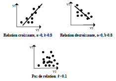

L'ANALYSE BIVARIEE : CORRELATION
Lorsque les variables sont numériques, on dispose d'une information très riche autorisant la recherche d'une formule mathématique pour qualifier la relation.
Nuage de points et droite de régression
La recherche d’une relation entre 2 variables numériques x et y peut se faire de 2 manières différentes :
D’une manière graphique, en représentant chaque observation par ses coordonnées x et y selon 2 axes. On obtient alors un nuage de points plus ou moins bien alignés.
D’une manière algébrique, en recherchant l’existence d’une relation linéaire entre ces 2 variables y = ax + b. On obtient des valeurs calculées y plus ou moins proches des valeurs observées.
Selon que la forme du nuage est plus ou moins proche d’une droite (la droite de régression), ou que les valeurs calculées à partir de l’équation (de régression) sont plus ou moins proches des observations réelles, on dira que la corrélation entre les 2 variables est bonne ou mauvaise. Le coefficient de corrélation mesure la qualité de l’ajustement entre les valeurs y et x réelles et le modèle de la relation représenté par l’équation y = ax + b ou par la droite correspondante. En référence à une interprétation causale du modèle, y est appelée variable à expliquer et x variable explicative.
Le coefficient de corrélation
Le coefficient de corrélation (r) établit la qualité de l’ajustement entre deux variables V1 et V2. Sa valeur absolue (ou r2) est comprise entre 0 et
Elle est égale à 1 si l’ajustement est parfait : il existe une fonction V1=axV2+b dont le résultat donne toujours exactement la valeur observée de V1 : on peut alors dire que V1 dépend exactement de V2.
Elle est égale à 0 si quelle que soit la fonction considérée, la valeur calculée de V1 est également éloignée de sa valeur observée. V1 est indépendante de V2.
L’usage est de considérer qu’à partir d’un coefficient de corrélation de valeur absolue supérieure à 0.8, il existe une bonne relation entre les 2 variables.
Le coefficient de corrélation est également affecté d’un signe. Il indique le sens de la relation. Elle est croissante si le signe est positif, décroissante sinon. Ce signe est aussi celui de a, le coefficient de régression dans l’équation V1=axV2+b.

Dans le cas d’une régression multiple, on cherche à établir une relation du type V1=axV2+bxV3+cxV4. On calcule alors un coefficient de régression multiple. Il indique également la qualité de l’ajustement effectué par le modèle et s’interprète comme un coefficient de corrélation simple.
Modèle linéaire et non linéaire
Le calcul du coefficient de corrélation se fait par rapport au modèle linéaire de l'équation du premier degré à laquelle correspond la droite de régression. On peut tester la relation par référence à un modèle non linéaire.
Il faudra pour cela transformer la valeur de la variable expliquée en la recalculant par rapport au modèle à tester. Par exemple, pour tester un modèle logarithmique, on calculera une nouvelle variable égale au log de la variable explicative : log(x) pour ensuite tester l'équation y=a.logx+b.